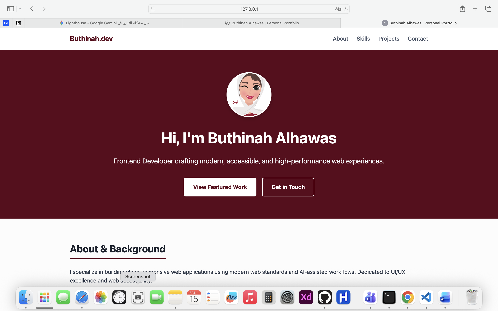

Personal Portfolio Application Case Study
A responsive, modern two-page portfolio web application built with semantic HTML5, modern CSS, and vanilla JS.
Lead Frontend Developer
2 Weeks
HTML5, CSS Grid/Flexbox, Vanilla JS, AI Tools
Deployed on GitHub Pages
Executive Summary & Problem Statement
The Challenge
Creating an accessible, high-performance web platform to display software projects and credentials while maintaining a 100/100 Lighthouse score for accessibility and performance.
Target Audience
Recruiters, hiring managers, and prospective clients seeking high-quality frontend development and UI/UX expertise.
Project UI Preview

Technical Architecture & Implementation
The application relies on CSS Grid for structural layout templates and Flexbox for interactive component alignment. Zero external heavy frameworks were used to ensure near-instant load speeds.
Featured Code Snippet
Accessible button component with clean transition and color contrast optimization:
/* Accessible Button Component */
.btn-primary {
background-color: #ffffff;
color: #5c061c;
border: 2px solid #ffffff;
padding: 0.8rem 1.6rem;
border-radius: 6px;
font-weight: bold;
transition: all 0.2s ease-in-out;
}
.btn-primary:hover {
background-color: #f7fafc;
}
AI Workflow & Retrospective
AI Tool Integration
Generative AI workflows (Gemini & ChatGPT) were utilized for code scaffolding, CSS architecture optimization, and verifying WCAG accessibility guidelines to achieve perfect Lighthouse scores.
Future Enhancements
Integrating Progressive Web App (PWA) support for offline capabilities and introducing dark mode toggle functionality via CSS variables.
Ready to Collaborate?
Let's build accessible and high-performance web applications together.
Get in Touch →